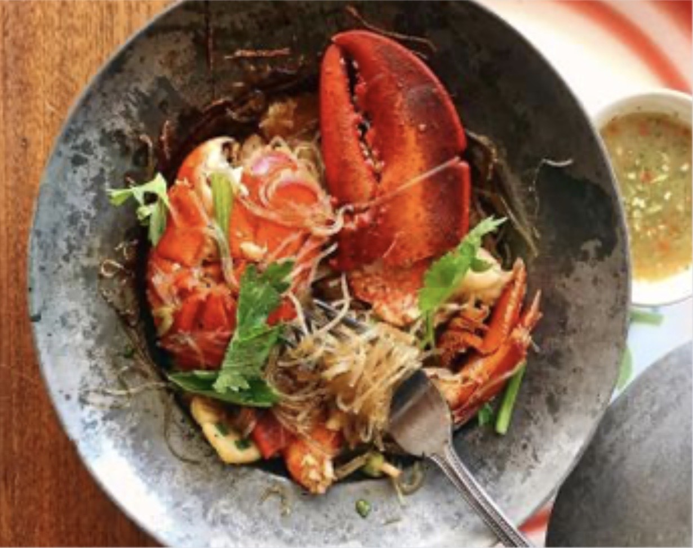
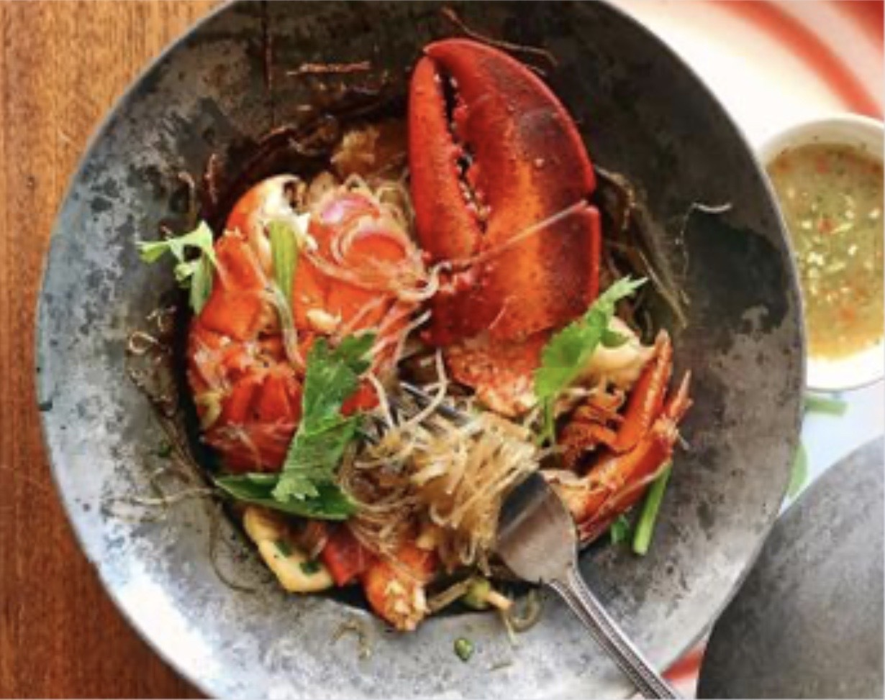

Everyday Categories
Everyday Food has developed recipes with a home cook in mind. These delicous dishes featured on "RY Paris" call for simple ingredients that you already have in your pantry or can easily find at local grocery stores and farmers' markets.


Healthy Recipes of the World
This weeks top award winners to critically-acclaimed recipe gems, check out these original recipes from home cook and professional chefs around the country.


Where To Eat
This is not the aspirational fluff of Instagram wall neon; it's fact. Recent surveys have shown that a majority of travelers consider food first when planning a trip, even ahead of where they sleep. Add to this that people are also traveling more than evey before - earthling logged a record-breaking 1.4 billion international trips last year - and it's safe to say that the hunger for new culinary experiences is more ravenous than ever.
While the endless alluring bistros of Paris, izakayas of Tokyo, shawarma stands of Tel Aviv, and tasting menus of Mexico City will always top many people's lists of cravings, we're continually on the lookout for somethign new to fill our bellies, our passports, and our feeds.

 
